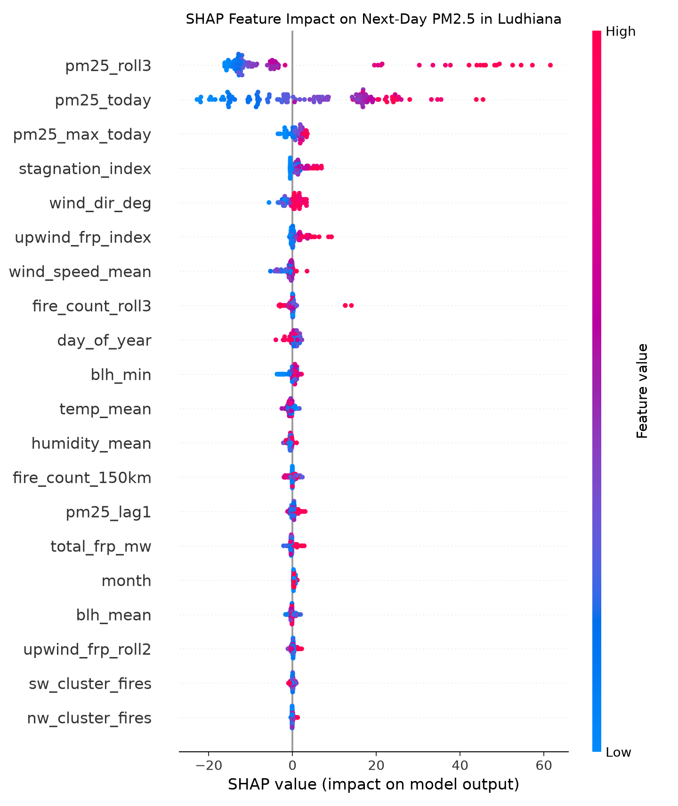

Physics-informed XGBoost forecasting next-day PM2.5 at PAU Ludhiana (30.9009° N, 75.8078° E) from NASA VIIRS farm fires & Open-Meteo wind vectors.
Tomorrow's Predicted PM2.5 (PAU)
-- µg/m³
Today: -- µg/m³
Predicted CPCB AQI Category
--
Today's Category: --
Fires Detected (<150 km)
--
-- in Upwind NW Sector
Smoke Arrival Time Lag
-- Hours
Wind: -- km/h | BLH: -- m
English: Loading advisory...
ਪੰਜਾਬੀ (Punjabi): ਸਲਾਹ ਲੋਡ ਹੋ ਰਹੀ ਹੈ...
🟠 Orange markers: NASA VIIRS thermal anomalies | 🔵 Blue marker: PAU Ludhiana CPCB Station
Top physical factors pushing tomorrow's forecast up (+) or down (-) in µg/m³:
| Feature | Today's Value | SHAP Impact (µg/m³) |
|---|
Global SHAP Feature Importance (2024–2025 Seasons):

Trained on 2019–2023; tested strictly out-of-sample on 2024 & 2025 Oct–Nov burning seasons.
| Model | MAE (µg/m³) | RMSE (µg/m³) | AQI Category Acc |
|---|---|---|---|
| Persistence Baseline (Tomorrow = Today) | -- | -- | -- |
| SmokeSignal XGBoost (Fires + Wind + BLH) | -- | -- | -- |
Cross-correlation between hourly satellite fire radiative power and PAU Ludhiana PM2.5 surge: